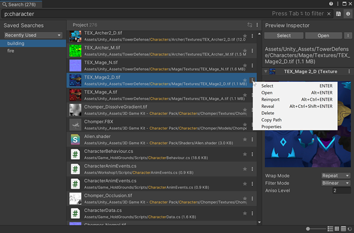

Use the Asset Search Provider to search all Assets in the current Project. You can search using keywords or GUIDs (Instance IDs).
You can also search the Asset Database or the file system from the Search window.
Search token: p: (for “project”)
Default action: Open the Asset, either in Unity or in an external editor.
| Action: | Function: |
|---|---|
| Select | Selects the Asset in the Project windowA window that shows the contents of your Assets folder (Project tab) More infoSee in Glossary. |
| Open | Opens the Asset, either in Unity or in an external editor. |
| Delete | Deletes the Asset. |
| Copy Path | Copies the path of the Asset. |
| Reimport | Reimports the Asset. |
| Reveal | Selects the Asset in the operating system’s file browser. |
| Properties | Opens the Asset’s property settings. |

Asset Search Provider
Search uses its own Asset indexer, which is faster and more flexible than the Asset Database or the Project Browser.
For example:
If you use the asterisk (*) in a query, Search performs both a normal search and a wildcard search against the file systems. This allows you to include files not indexed by the Asset database in your searches.